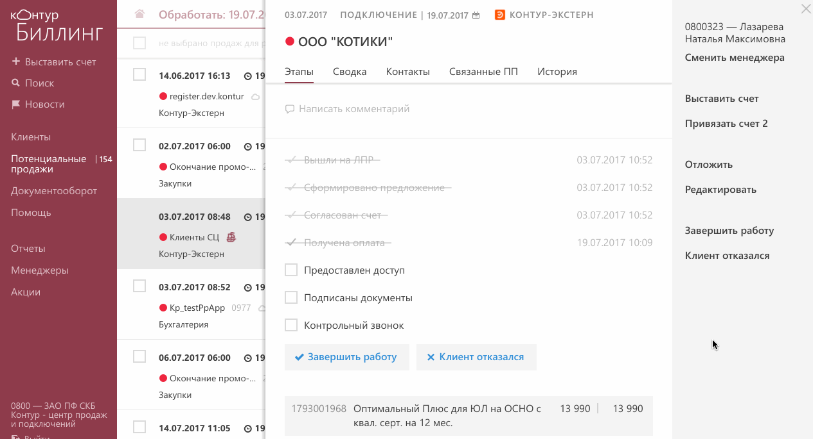
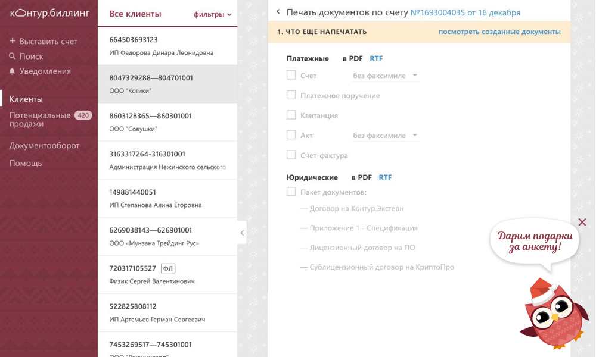
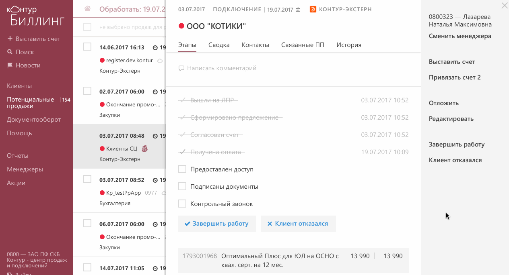
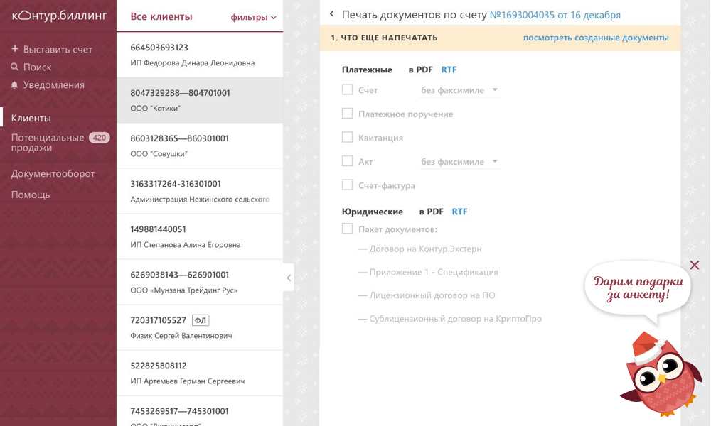

Контур.Биллинг
Биллинг—сервис для продажи продуктов Контура. Пользователи: отделы продаж компании и партнеры. В Биллинге они выставляют счета, готовят юридические документы, отслеживают оплаты и выдают сертификаты электронной подписи.
Старый биллинг не менялся 10 лет и приносил много проблем: интерфейсу обучаются 3 дня, некоторые компании отказываются от партнерства.
Контур решил создать новый Биллинг. Моя задача:
- изучить аудиторию и сценарии;
- создать концепт продукта с аналитиками;
- сделать интерфейс понятным без обучения;
- отвечать на вопросы пользователей об интерфейсе;
- собирать обратную связь от пользователей;
- писать тексты новостей, помощи, писем и т.д.


Персональная сводка
Каждый партнер работает с клиентом по-своему, но есть общие для всех этапы: оплата счетов, получение денег от Контура по актам, продление сервисов. В старом биллинге информация разбросана по интерфейсу в виде списков без итоговых сумм. Списки большие, их нельзя фильтровать.
Главная идея нового интерфейса—сводка на главной по основным этапам, возможность добавить свои выборки клиентов, отсутсвие лишних переходов. Раньше, чтобы посмотреть подробности по клиенту, надо было уходить из списка. В новом интерфейсе карточка клиента рядом со списком, и переход между выборками можно сделать в этом же окне.


Потенциальные клиенты
Это клиенты, которые что-то слышали о продуктах Контура, может пользовались демоверсиями, но еще не готовы покупать. Поэтому работа с ними ведется поэтапно, каждый контакт с клиентом планируется.
Часто клиент интересуется не одним продуктом, поэтому и появился термин «потенцильная продажа»—интерес по конкретному продукту.
В старом интерфейса все продажи во всех статусах шли линейным списком и интерфейс никак не помогал понять, с чем работать в первую очередь, какая загрузка. В новом интерфейсе появились: календарь, чтобы наглядно видеть план на день и месяц, сводка по ключевым статусам, фильтры, чтобы создать свою выборку.


Над этим интерфейсом мы работали совместо с Ксенией Ильиных: вместе продумали концепт, потом разделились дорабатывать детали: я карточку потенциальной продажи, Ксюша—списки.
Приятные мелочи
Для пользователей приятные мелочи: анимации, новогоднее оформление, нескучную загрузку. А с командой обязательно нескучно делимся обратно всязью.
 


